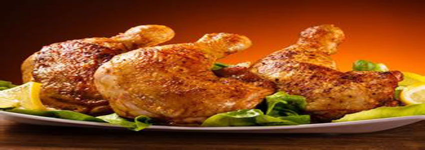

食材管理
如何判别食材是否过期？
如何避免食材交叉污染？
食材管理帮您解决！
食谱推荐
食材太多？菜式不合口？
我们来为你搭配出新花样
智能冰箱
智能化管理您的冰箱
让您工作更省心，饮食更放心，感觉更贴心
营养金字塔
营养金字塔（又叫“食物指南金字塔”、“营养学金字塔”、“平衡膳食宝塔”、“食品金字塔”、“饮食金字塔”等）是一个人为制造出的像金字塔形状的为应对人体生理特征而做成的一个黄金三角。
为指导人们合理营养，中国营养学会提出了食物指南，并形象地称为“4+1营养金字塔”（即“营养金字塔”）。"4+1"指每日膳食中应当包括“粮、豆类”，“蔬菜、水果”，“奶和奶制品”，“禽、肉、鱼、蛋”四类食物，以这四类食物作为基础，适当增加“盐、油、糖”。
第一层是最重要的粮谷类食物，它构成塔基，应占饮食中的很大比重。每日粮豆类食物摄取量为400—500克，粮食与豆类之比为10：1。
第二层是蔬菜和水果，因此在金字塔中占据了相当的地位。每日蔬菜和水果摄入量300—400克，蔬菜与水果之比为8：1。
第三层是奶和奶制品，以补充优质蛋白和钙。每日摄取量为200—300克。
第四层为动物性食品，主要提供蛋白质、脂肪、B族维生素和无机盐。禽、肉、鱼、蛋等动物性食品每日摄入量为100—200克。
“金字塔”塔尖为适量的油、盐、糖。
以上四种基本成分加上塔尖叠合在一起恰似“金字塔”。
小技巧
冰箱只放七成满:放在冰箱里的食物或容器间要留出空隙,才利于冷空气流通,确保温度达标。
生熟分开:一般来说,直接入口的食物要放在上面两层,比如剩饭菜、酸奶、牛奶、熟食等,而生的食物要放在下面两层,比如生蔬菜、生豆腐等。
不同位置储存不同食物:一般来说,冰箱下面比上面冷一些;靠里面深处的地方比靠门边的地方冷一些。
不怕冻的豆制品、奶类、剩饭菜可放得靠里些;蔬菜、水果等怕冻食品可放得靠外一些。
冰箱开门的部分温度最高,适合放不易坏食品,比如鸡蛋、奶酪、鱼干、虾皮、海米等。
鲜肉、鲜鱼虾等在未冷冻时最易坏,最好放在零度冷藏保鲜盒里。如冰箱没这个功能,就应装在密闭保鲜盒里,放在冷藏室最下面靠里处。
Intelligence Refrigerator Management System
make your life easier,safer and healthier

- 